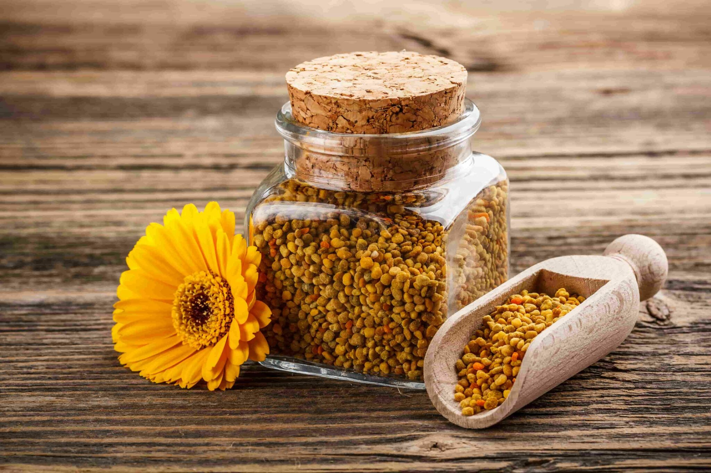
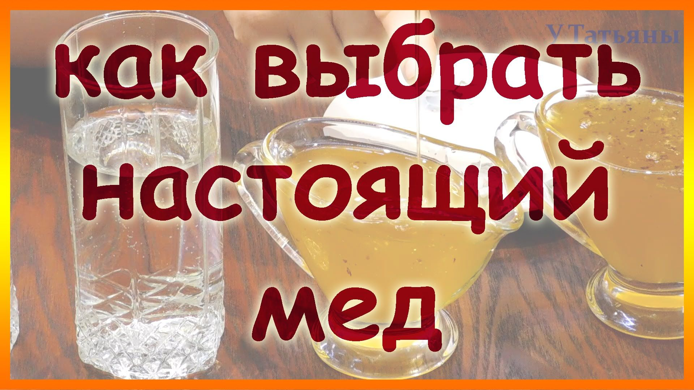

Блог о мёде.
В этом блоге мы расскажем о мёде, его пользе и продукции сделанной на пасеке Ярослава.

Польза мёда и его свойства.
Мёд - это продукт, который получается из нектара цветущих растений. Он содержит множество полезных веществ, таких как витамины, минералы и антиоксиданты. Из-за этого мёд имеет антибактериальные и противовоспалительные свойства.
Читать дальше

Польза пыльцы и перги.
Пыльца и перга - это продукты, производимые пчелами из цветочной пыли и нектара. Эти продукты содержат множество полезных веществ и пользуются популярностью в качестве дополнительных источников питания.
Читать дальше

Как отличить натуральный мёд от подделки.
Ни для кого не секрет, что мёд – это уникальный продукт для здоровья человека. Натуральный мёд содержит в своем составе 22 аминокислоты, 27 минералов. Также очень богат витаминами, антиоксидантами и ферментами.
Читать дальше